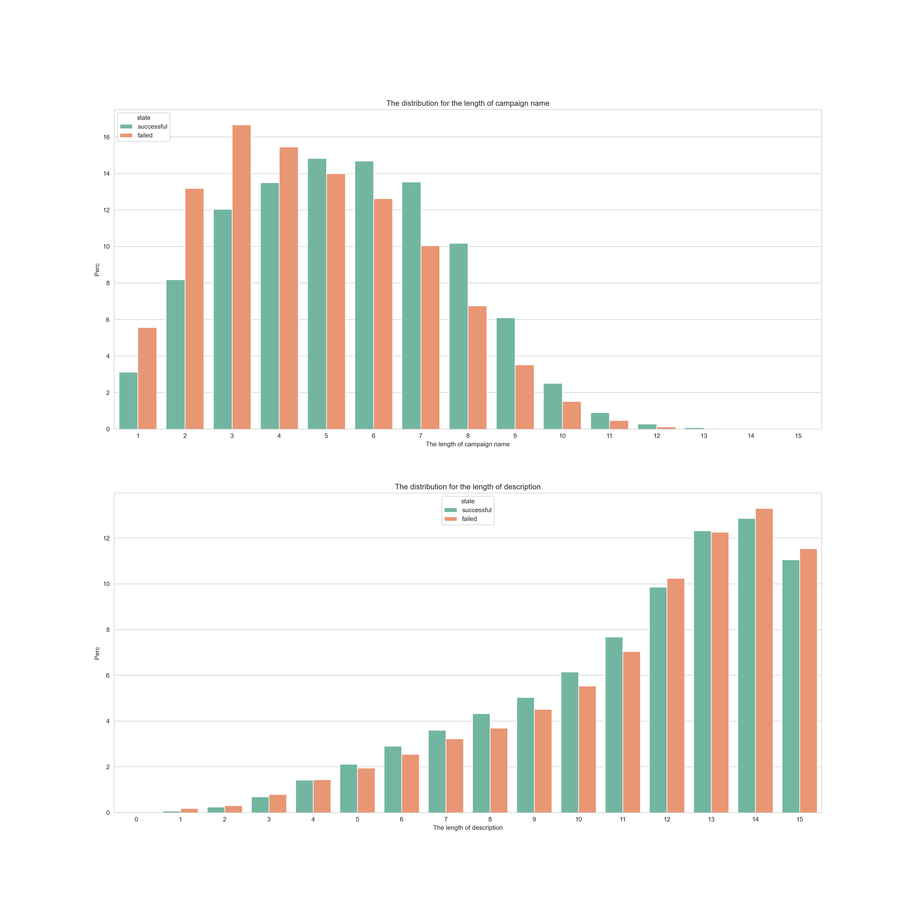
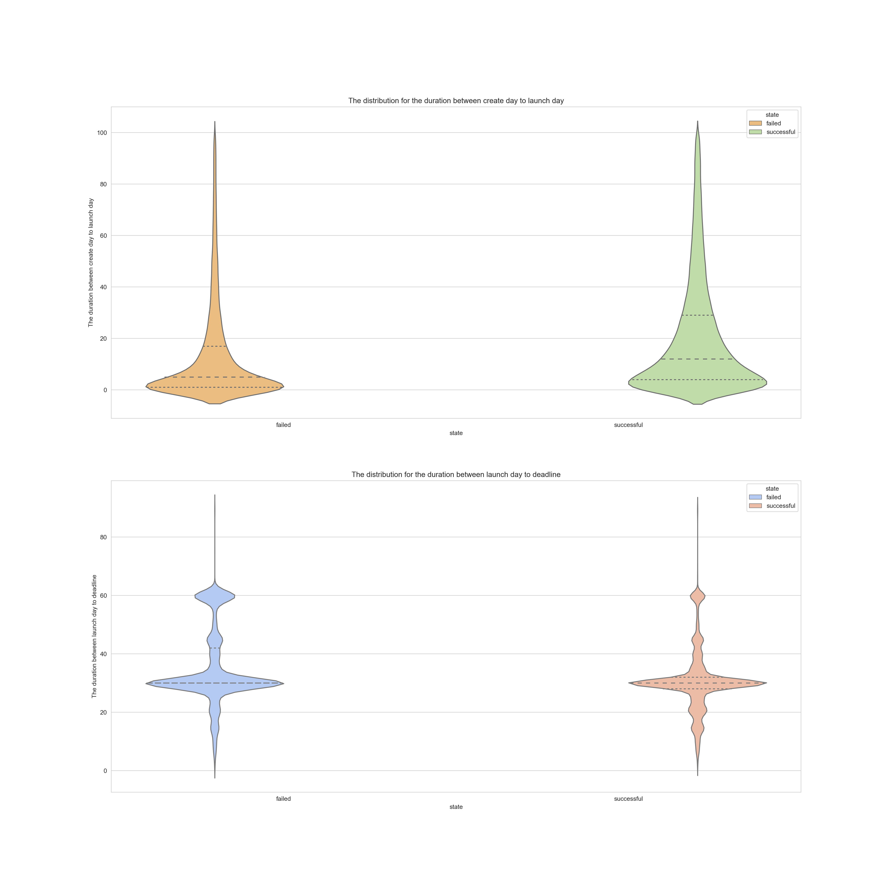
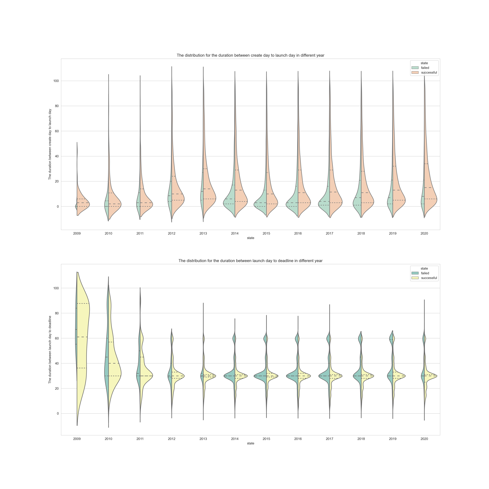
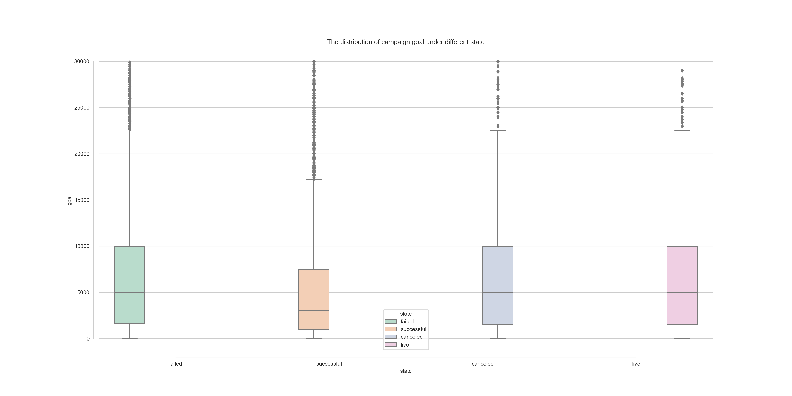
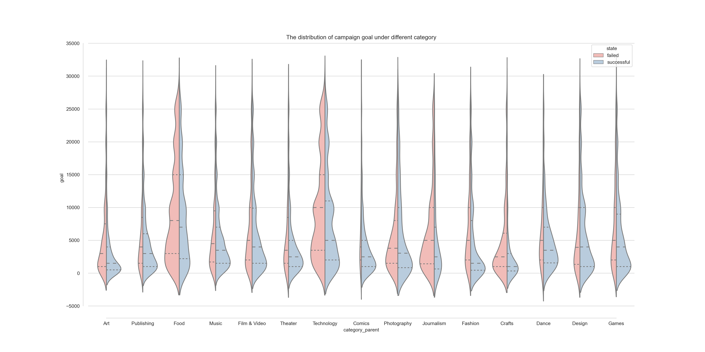
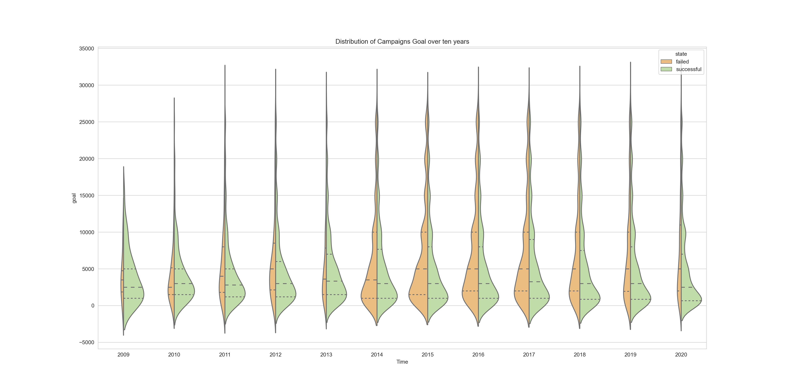
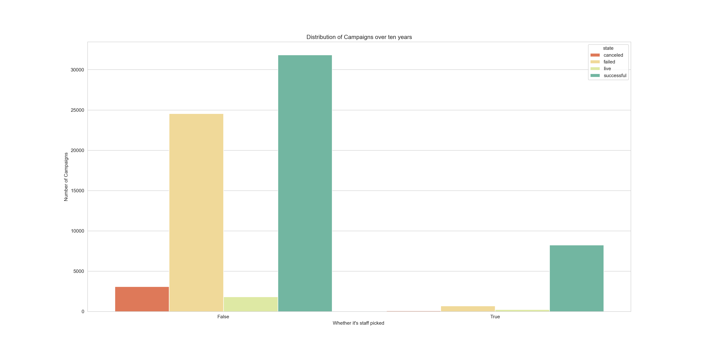
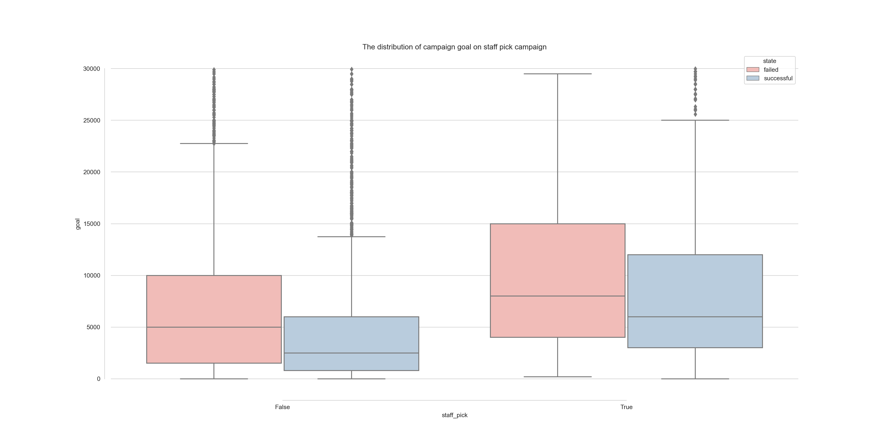
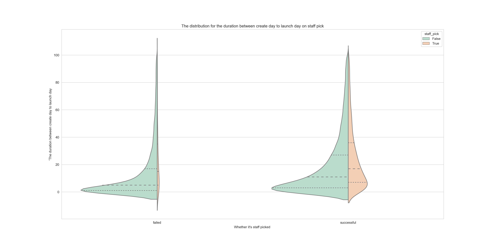

import pandas as pd
import numpy as np
import matplotlib.pyplot as plt
import matplotlib.colors
import geopandas as gpd
import seaborn as sns
import warnings
sns.set_style("whitegrid")
color = sns.color_palette()
warnings.filterwarnings('ignore')Kickstarter = pd.read_csv("Cleaned_Kickstarter.csv")
successful_kickstarter = Kickstarter[Kickstarter['state'] == "successful"]
failed_kickstarter = Kickstarter[Kickstarter['state'] == "failed"]
compare_name_len_clean = pd.concat([Kickstarter['name_len_clean'].value_counts(),
successful_kickstarter['name_len_clean'].value_counts(),
failed_kickstarter['name_len_clean'].value_counts()], axis=1)
compare_name_len_clean.columns = ['all','successful','failed']
compare_name_len_clean.loc['total'] = compare_name_len_clean.sum(axis=0)
def get_perc(val, col):
return (val / compare_name_len_clean[col]['total'])*100
compare_name_len_clean['all_perc'] = compare_name_len_clean['all'].apply(get_perc, args=('all',))
compare_name_len_clean['success_perc'] = compare_name_len_clean['successful'].apply(get_perc, args=('successful',))
compare_name_len_clean['failed_perc'] = compare_name_len_clean['failed'].apply(get_perc, args=('failed',))
compare_name_len_clean = compare_name_len_clean.reset_index()
compare_name_len_clean_successful = compare_name_len_clean[["index", "success_perc"]].rename(columns={'success_perc': 'perc'})
compare_name_len_clean_successful["state"] = "successful"
compare_name_len_clean_failed = compare_name_len_clean[["index", "failed_perc"]].rename(columns={'failed_perc': 'perc'})
compare_name_len_clean_failed["state"] = "failed"
name_len_clean = pd.concat([compare_name_len_clean_successful, compare_name_len_clean_failed])
name_len_clean = name_len_clean[name_len_clean["index"] != "total"]
compare_blurb_len_clean = pd.concat([Kickstarter["blurb_len_clean"].value_counts(),
successful_kickstarter["blurb_len_clean"].value_counts(),
failed_kickstarter["blurb_len_clean"].value_counts()], axis=1)
compare_blurb_len_clean.columns = ['all','successful','failed']
compare_blurb_len_clean.loc['total'] = compare_blurb_len_clean.sum(axis=0)
def get_perc(val, col):
return (val / compare_blurb_len_clean[col]['total'])*100
compare_blurb_len_clean['all_perc'] = compare_blurb_len_clean['all'].apply(get_perc, args=('all',))
compare_blurb_len_clean['success_perc'] = compare_blurb_len_clean['successful'].apply(get_perc, args=('successful',))
compare_blurb_len_clean['failed_perc'] = compare_blurb_len_clean['failed'].apply(get_perc, args=('failed',))
compare_blurb_len_clean = compare_blurb_len_clean.reset_index()
compare_blurb_len_clean_successful = compare_blurb_len_clean[["index", "success_perc"]].rename(columns={'success_perc': 'perc'})
compare_blurb_len_clean_successful["state"] = "successful"
compare_blurb_len_clean_failed = compare_blurb_len_clean[["index", "failed_perc"]].rename(columns={'failed_perc': 'perc'})
compare_blurb_len_clean_failed["state"] = "failed"
blurb_len_clean = pd.concat([compare_blurb_len_clean_successful, compare_blurb_len_clean_failed])
blurb_len_clean = blurb_len_clean[blurb_len_clean["index"] != "total"]
crt_launch_ddl_Kickstarter = pd.read_csv("crt_launch_ddl_Kickstarter.csv")
# crt_launch_ddl_Kickstarter = pd.DataFrame(columns = ['state', 'create_to_launch_day', 'launch_to_deadline_day'])
#
# for idx, row in Kickstarter.iterrows():
# crt_launch_ddl_Kickstarter.loc[idx, "state"] = Kickstarter.loc[idx, "state"]
# crt_launch_ddl_Kickstarter.loc[idx, "create_to_launch_day"] = Kickstarter.loc[idx, "create_to_launch"].split()[0]
# crt_launch_ddl_Kickstarter.loc[idx, "launch_to_deadline_day"] = Kickstarter.loc[idx, "launch_to_deadline"].split()[0]
#
# crt_launch_ddl_Kickstarter["year"] = Kickstarter["launched_at_yr"]
# crt_launch_ddl_Kickstarter["staff_pick"] = Kickstarter["staff_pick"]
# crt_launch_ddl_Kickstarter = crt_launch_ddl_Kickstarter[crt_launch_ddl_Kickstarter["state"].isin(["successful", "failed"])]
#
# crt_launch_ddl_Kickstarter = crt_launch_ddl_Kickstarter.astype({'create_to_launch_day': 'int32', 'launch_to_deadline_day': 'int32',
# 'year': 'object'})
Kickstarter_staff_pick = Kickstarter.groupby(["staff_pick", "state"])['blurb'].agg(['count'])
Kickstarter_staff_pick = Kickstarter_staff_pick.reset_index()Names and Description
Campaigns with longer names and descriptions are more likely to be successful.
- After removing stop words, successful campaign names are on average approximately 1 word longer than failed campaign names. In fact, campaigns with names less than or equal to 3 words are 2.1 times more likely to fail than those longer than 3 words. Successful campaign descriptions are also significantly longer than failed campaign descriptions
fig, ax = plt.subplots(2, 1, figsize=(20, 20))
sns.barplot(data = name_len_clean[name_len_clean["index"] < 16], hue_order = ["successful", "failed"],
x = "index", y="perc", hue = "state",palette = "Set2", ax=ax[0])
ax[0].set_title('The distribution for the length of campaign name')
ax[0].set_xlabel('The length of campaign name')
ax[0].set_ylabel('Perc')
sns.barplot(data = blurb_len_clean[blurb_len_clean["index"] < 16], hue_order = ["successful", "failed"],
x = "index", y="perc", hue = "state",palette = "Set2", ax=ax[1])
ax[1].set_title('The distribution for the length of description')
ax[1].set_xlabel('The length of description')
ax[1].set_ylabel('Perc')
plt.show()
Times
Successful campaigns invest more time in creating the campaign
- Successful campaigns tend to invest more money in creating the campaign. The median number of days spent between creation and launch for successful campaigns is 16, as compared to the median of 7 days spent for failed campaigns, suggesting the importance of preparation. Furthermore, the longer funding time do not yield better results.
fig, ax = plt.subplots(2, 1, figsize=(20, 20))
sns.violinplot(x="state", y = "create_to_launch_day", hue="state",
data = crt_launch_ddl_Kickstarter[crt_launch_ddl_Kickstarter.create_to_launch_day < 100], palette="Spectral", scale="count", inner="quartile", ax=ax[0])
ax[0].set_title('The distribution for the duration between create day to launch day')
ax[0].set_xlabel('state')
ax[0].set_ylabel('The duration between create day to launch day')
sns.violinplot(x="state", y = "launch_to_deadline_day", hue="state", inner="quartile",
data = crt_launch_ddl_Kickstarter, palette="coolwarm", scale="count", ax=ax[1])
ax[1].set_title('The distribution for the duration between launch day to deadline')
ax[1].set_xlabel('state')
ax[1].set_ylabel('The duration between launch day to deadline')
plt.show()
Time spent between creation and launch get longer over 10 years
- Generally speaking, time spent between creation and launch get longer over 10 years, while the fact that successful campaigns spend more money in creating the campaign doesn’t change. But the funding time for majority projects shortened in the past ten years. Before 2012, the average funding time is over 40 days, with 25% over 80 days, while in 2020, the funding time for majority projects is below 40 days.
fig, ax = plt.subplots(2, 1, figsize=(20, 20))
sns.violinplot(x="year", y = "create_to_launch_day", hue="state",
data = crt_launch_ddl_Kickstarter[crt_launch_ddl_Kickstarter.create_to_launch_day < 100], palette="Pastel2",
split=True, scale="count", inner="quartile", ax=ax[0])
ax[0].set_title('The distribution for the duration between create day to launch day in different year')
ax[0].set_xlabel('state')
ax[0].set_ylabel('The duration between create day to launch day')
sns.violinplot(x="year", y = "launch_to_deadline_day", hue="state", inner="quartile",
data = crt_launch_ddl_Kickstarter, palette="Set3", split=True, scale="count", ax=ax[1])
ax[1].set_title('The distribution for the duration between launch day to deadline in different year')
ax[1].set_xlabel('state')
ax[1].set_ylabel('The duration between launch day to deadline')
plt.show()
Goals
Setting the right goal is as important as you’d think
- The median goal for successful campaigns from this data is 2,750 while the median goal for failed campaigns is nearly 5,000. We also found that 28% of failed campaigns had a goal of over 50,000. When comparing successful and failed campaigns, we found that the goal matters especially when the goal is very high.
fig = plt.figure(figsize=(20, 10))
sns.boxplot(x="state", y="goal",
hue="state", palette="Pastel2",
data = Kickstarter[Kickstarter.goal < 30000])
sns.despine(offset=10, trim=True)
plt.title("The distribution of campaign goal under different state")
plt.show()
Technology and food oriented campaign has higher goal
- Comparing to other projects, campaigns under technology and food category obviously sets a higher goal.The median goal for successful campaigns from this data is 5,750, while the median goal in food oriented campaigns is over 8,213 and the median goal in technology oriented campaigns is over 10,000. Maybe that’s the reason for their failure.
Kickstarter_category_goal = Kickstarter[Kickstarter.state.isin(["successful", "failed"])]
fig = plt.figure(figsize=(20, 10))
sns.violinplot(x="category_parent", y="goal",
hue="state", palette="Pastel1",
split=True, scale="count", inner="quartile",
data = Kickstarter_category_goal[Kickstarter_category_goal.goal < 30000])
sns.despine(offset=10, trim=True)
plt.title("The distribution of campaign goal under different category")
plt.show()
Campaign goal reached high point in 2017
- During 2015 - 2017, the US enjoyed the steady growth of Economy, which makes the the median goal for campaigns reached a high point. After 2017, recession started and the goal for campaigns went down correspondingly
fig = plt.figure(figsize=(20, 10))
sns.violinplot(x="launched_at_yr", y="goal", hue="state", palette="Spectral", split=True, scale="count", inner="quartile",
data = Kickstarter_category_goal[Kickstarter_category_goal.goal < 30000])
plt.title("Distribution of Campaigns Goal over ten years")
plt.xlabel("Time")
plt.show()
Staff Picked
Staff picks have significant impact on campaign success
- Kickstarter’s “staff picks” are given high-value front page real estate as “Projects We Love”. Since these projects are given such high visibility, it’s no surprise that staff pick projects are more likely to be successful than those that aren’t
fig = plt.figure(figsize=(20, 10))
sns.barplot(x="staff_pick", y="count", hue="state", palette = "Spectral", data = Kickstarter_staff_pick)
plt.title("Distribution of Campaigns over ten years")
plt.xlabel("Whether it's staff picked ")
plt.ylabel("Number of Campaigns")
plt.show()
Staff pick projects have higher goal
- Kickstarter love promoting projects with higher goal. Since it’s understandable that not all projects can be staff picks, by promoting high high-value projects, Kickstarter can leverage the power of staff picks to improve its revenue.
Kickstarter_category_goal = Kickstarter[Kickstarter.state.isin(["successful", "failed"])]
fig = plt.figure(figsize=(20, 10))
sns.boxplot(x="staff_pick", y="goal",
hue="state", palette="Pastel1",
data = Kickstarter_category_goal[Kickstarter_category_goal.goal < 30000])
sns.despine(offset=10, trim=True)
plt.title("The distribution of campaign goal on staff pick campaign")
plt.show()
Staff pick projects invest more time in preparation
- Kickstarter usual promoted projects with higher preparation time. Maybe that’s one of the keys leading to success.
fig = plt.figure(figsize=(20, 10))
sns.violinplot(x="state", y = "create_to_launch_day", hue="staff_pick",
data = crt_launch_ddl_Kickstarter[crt_launch_ddl_Kickstarter.create_to_launch_day < 100], palette="Pastel2",
split=True, scale="count", inner="quartile")
plt.title("The distribution for the duration between create day to launch day on staff pick")
plt.xlabel("Whether it's staff picked ")
plt.ylabel("'The duration between create day to launch day")
plt.show()